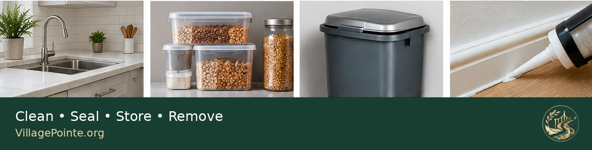
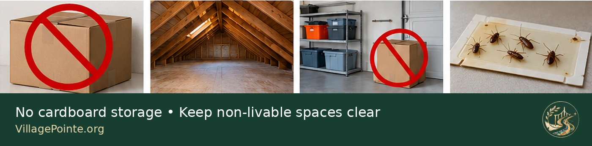
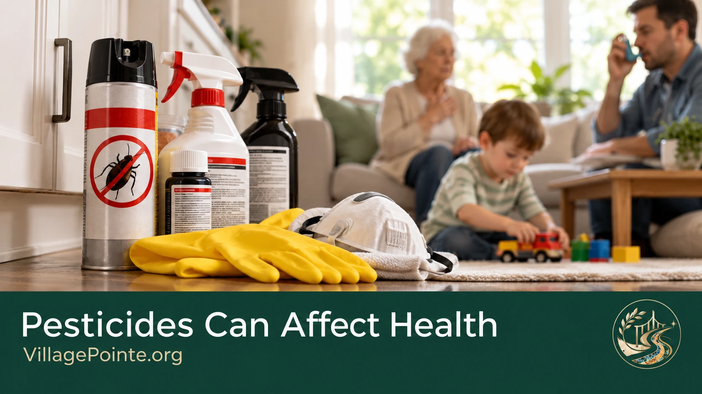
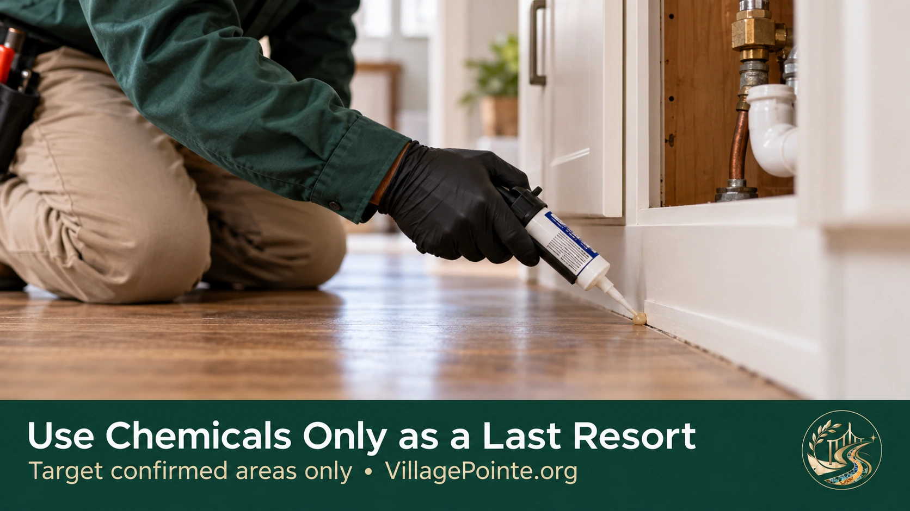

Prevention before pesticides.
Pest control should not begin with a spray can. The preferred framework is Integrated Pest Management (IPM): prevent entry, remove food and water, remove shelter, monitor for activity, physically clean up pests and residue, and use targeted chemical treatment only when necessary.
This approach applies to cockroaches, ants, silverfish, pantry pests, mice and many other household pests. Cockroaches deserve the most detailed attention because they can become established indoors, spread through attached housing, contaminate food and surfaces, and contribute significant allergens.
Cockroaches: the principal indoor pest.
Cockroaches are more than an unpleasant sight. Their feces, saliva, shed skins and body fragments contain proteins that can trigger allergic reactions and worsen asthma. The National Institute of Environmental Health Sciences identifies cockroaches as an indoor allergen source and CDC guidance connects cockroach exposure with asthma control concerns.
In New Jersey, Rutgers identifies German, American and Oriental cockroaches among the important species associated with structures. German cockroaches are especially important indoors and commonly concentrate around kitchens, bathrooms, appliances, sinks and cabinets. Daytime sightings can indicate a significant infestation.
Think of the entire house as a pest-control system.
Keep them out.
Seal cracks, holes, plumbing penetrations, cable openings, door gaps, window gaps, utility chases and other routes into living space.
Starve them.
No crumbs, grease, exposed food, unwashed dishes, accessible garbage or open pet food left out overnight.
Dry them out.
Repair plumbing leaks, remove standing water, control condensation and keep damp areas dry.
Deny shelter.
Remove clutter and cardboard. Keep storage orderly. Preserve inspection access around walls, appliances and utility areas.

Utmost cleanliness, maintained continuously.
For cockroaches and many other pests, sanitation is not an occasional deep-cleaning event. It is a daily operating condition of the home. Clean dishes, crumbs and spills promptly. Clean grease from cooking surfaces. Vacuum or sweep food areas regularly. Clean beneath and behind appliances, along cabinet edges, in pantry corners and under furniture.
End every day with the kitchen reset.
- No dirty dishes left overnight.
- No exposed food.
- No crumbs or grease residue.
- No standing water.
- No uncovered garbage.
- No pet food left out overnight.
- Counters, tables and food-preparation areas cleaned.
Repair dripping faucets, leaking sink traps, refrigerator leaks, dishwasher leakage, washing-machine leaks and toilet leaks. Use trash containers with properly fitting lids. During an active infestation, remove garbage and recycling frequently and clean containers that hold food residue.
No cardboard as long-term household storage. Keep the attic empty.
Do not keep cardboard boxes in the attic, garage, closets or other areas of the house as long-term storage. Corrugated cardboard absorbs moisture and its folds, seams and internal channels provide protected spaces for insects. Damp cardboard can support or attract cockroaches, silverfish and other pests.
Remove shipping cartons, moving boxes, appliance boxes and unnecessary paper packaging promptly. For items that truly need to be stored, use clean, durable containers with secure lids instead of cardboard whenever practical.
The Village Pointe attic should not be treated as another household storage room. Ideally, the attic should not be used for storage at all. Boxes, paper, fabric and miscellaneous possessions create clutter, conceal pests, retain dust and moisture, and make it harder to notice roof leaks, condensation, insect activity or other building problems.

Monitor. Do not guess.
Sticky monitoring traps are useful for locating cockroach activity and measuring whether control is working. Place them near likely travel routes and harborages rather than randomly in open areas. Check them regularly and record where activity occurs.
A sticky trap is a monitoring tool, not the complete solution to an established infestation. An inspection showing no evidence of pests is meaningful information. It supports continued prevention and monitoring rather than automatic escalation to chemical treatment.
A dead cockroach is still an allergen source.
Killing the insect does not instantly remove the health concern. Dead bodies, feces, shed skins, egg cases and fragmented body material can remain in household dust and continue contributing cockroach allergens.
Remove contaminated traps promptly. Where appropriate, use a HEPA-filtered vacuum to remove live and dead cockroaches, fecal material, shed skins and egg cases. Avoid unnecessarily crushing or dispersing dry cockroach remains into the air.
Pesticides and chemical controls deserve serious respect.
Pesticides are designed to kill or control living organisms. Their presence on a store shelf does not make them harmless. Risk varies by active ingredient, formulation, concentration, dose, route of exposure, frequency and the person exposed. Unnecessary exposure should be avoided.
Important safety principle
Read and understand first before using pesticides. EPA guidance emphasizes prevention and targeted treatment. CDC guidance warns that sprays and foggers can trigger asthma attacks. Medical and public-health sources also discuss poisoning, respiratory irritation and possible longer-term effects from some pesticide exposures.

Immediate effects: minutes to hours
Depending on the product and exposure, possible immediate symptoms can include eye, nose and throat irritation, coughing, wheezing, breathing discomfort, headache, dizziness, nausea, skin irritation and other acute symptoms. People with asthma or other respiratory vulnerabilities may be especially sensitive to inhaled sprays, aerosols or irritating vapors.
Short-term effects: days to weeks
Some symptoms may continue after application because residues can remain on surfaces or in dust. Reentry time is not the same thing as total residue disappearance. If symptoms follow treatment, do not assume they will simply pass. Reassess the exposure, ventilation and treatment plan.
Long-term concerns
EPA and NIH-related research discuss concerns involving the nervous system, organs, hormones, development and, for some substances and exposure circumstances, cancer risk. These findings do not mean every household pesticide causes these outcomes in ordinary use. They do explain why repeated or unnecessary exposure should not be treated casually.
Vulnerable residents deserve extra protection
Children, seniors, pregnant residents and people with asthma, chronic respiratory disease or other relevant medical conditions may require additional precautions. No pest-control plan should assume the same chemical approach is medically appropriate for every household.
Strict limits on chemical treatment.
Chemical pesticides should be considered only when a documented pest-management need cannot be adequately addressed through prevention, sanitation, moisture control, exclusion, monitoring or other reasonably available lower-exposure methods.
- Confirm the problem first. Identify the pest and the specific areas involved. A general concern about pests elsewhere in a building is not, by itself, proof that every unit needs chemical treatment.
- Strictly limit the treatment area. Chemicals should be confined to the smallest justified area, namely confirmed affected locations and immediate adjoining spaces when absolutely necessary.
- Prefer targeted methods. If chemicals are necessary, carefully placed baits, gels or crack-and-crevice applications are generally preferable to broad indoor spraying or fogging.
- Avoid automatic repeat applications. A calendar alone is not a reason for treatment. Additional applications should require a demonstrable purpose supported by inspection or monitoring.
- Stop when the problem has been resolved. If follow-up monitoring no longer supports chemical intervention, further applications should stop.
- Suspend treatment immediately if a possible health issue is noticed. If any occupant experiences suspected exposure-related symptoms, stop or suspend the application, get medical help or Poison Control guidance, and do not resume until the situation has been reassessed.

Broad room spraying and fogging deserve special caution.
CDC advises avoiding sprays and foggers in homes because they can trigger asthma attacks. Rutgers notes that total-release aerosols, often called bug bombs, are not an effective way to eliminate cockroach infestations and may create additional hazards. Even when any chemical is used properly, more product does not mean better control.
If a professional is engaged, ask what pest was identified, where activity is occurring, what structural or sanitation condition is supporting it, what product and active ingredient will be used, the EPA registration number, exactly where it will be applied, and what precautions are required for residents.
Attached housing requires coordinated control, not automatic blanket treatment.
In attached homes and multifamily buildings, pests may travel through plumbing chases, shared-wall openings, utility penetrations and other connected structural pathways. One very clean unit can still receive pests from elsewhere in the building.
That makes exclusion and building maintenance particularly important. It may justify coordination among residents, maintenance, property management and licensed pest-management professionals. It does not automatically mean every unit needs the same chemical application.
What to do if pesticide exposure causes symptoms.
If symptoms develop during or after application, leave the affected area and get fresh air when safe to do so. For breathing difficulty, severe symptoms or any emergency, call 911.
For suspected poisoning or urgent exposure guidance in the United States, call Poison Control at 1-800-222-1222. Keep the product name and EPA registration number, if available, so the substance can be identified quickly.
Important note: A suspected reaction does not automatically prove the pesticide was the cause. However, it does justify immediate caution, medical guidance and reassessment before any further use in the residence.
Resident prevention checklist.
- Keep kitchens and food areas exceptionally clean.
- Wash dishes and clean spills promptly.
- Store food in secure containers.
- Keep garbage enclosed and remove it regularly.
- Repair leaks and eliminate standing water.
- Seal cracks, holes and utility penetrations.
- Do not keep cardboard boxes as household storage.
- Keep the attic essentially empty.
- Keep garage and utility areas dry and uncluttered.
- Inspect incoming boxes and used items.
- Use monitoring traps and check them regularly.
- Remove dead cockroaches and allergenic residue promptly.
- Use HEPA-filtered vacuuming where appropriate.
- Avoid routine sprays and foggers.
- Use pesticides only when justified and exactly as labeled.
- Continue prevention after the infestation is gone.
Official and medical references.
This page intentionally relies on government, medical and university/public-health sources rather than commercial pest-control marketing or personal blogs. EPA and CDC are the primary sources for household pest-control practice. The medical sources below help explain exposure concerns, poisoning and vulnerability.
U.S. EPA — Smart Pest Control to Protect Your Health ↗ U.S. EPA — Pesticides' Impact on Indoor Air Quality ↗ U.S. EPA — Do's and Don'ts of Pest Control ↗ U.S. EPA — Integrated Pest Management Toolkit ↗ CDC — Controlling Asthma: Cockroaches and Other Pests ↗ NIEHS / NIH — Pesticides ↗ NIEHS / NIH — Dust Mites and Cockroaches ↗ Mayo Clinic — Allergy-Proof Your Home ↗ Cleveland Clinic — Organophosphate Poisoning ↗ Harvard Health — Chemical Pollutants: A Growing Concern for Your Heart ↗ NHS — Poisoning ↗ New Jersey DEP — Pesticide Control Regulations ↗ New Jersey DEP — Pesticide Resources ↗ Rutgers NJAES — German Cockroach ↗ Rutgers NJAES — Cockroach Species in New Jersey and Their Control Strategies ↗